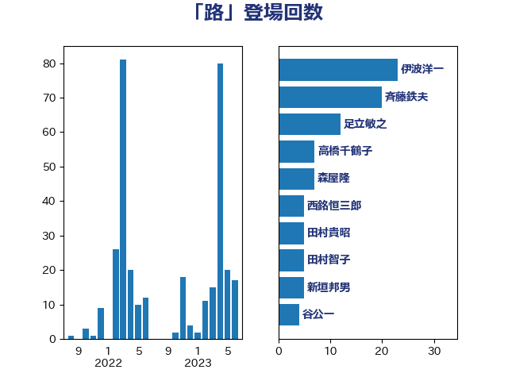

単語「路」

| 伊波洋一 | 無所属 | 23 回 |
| 斉藤鉄夫 | 公明党 | 20 回 |
| 足立敏之 | 自由民主党 | 12 回 |
| 高橋千鶴子 | 日本共産党 | 7 回 |
| 森屋隆 | 立憲民主党 | 7 回 |
| 西銘恒三郎 | 自由民主党 | 5 回 |
| 田村貴昭 | 日本共産党 | 5 回 |
| 田村智子 | 日本共産党 | 5 回 |
| 新垣邦男 | 立憲民主党 | 5 回 |
| 谷公一 | 自由民主党 | 4 回 |
| 小山展弘 | 立憲民主党 | 4 回 |
| 勝俣孝明 | 自由民主党 | 4 回 |
| 美延映夫 | 日本維新の会 | 3 回 |
| 石井浩郎 | 自由民主党 | 3 回 |
| 渡辺創 | 立憲民主党 | 3 回 |
| 永井学 | 自由民主党 | 3 回 |
| 柳ヶ瀬裕文 | 日本維新の会 | 3 回 |
| 塩川鉄也 | 日本共産党 | 3 回 |
| 嘉田由紀子 | 無所属 | 3 回 |
| 青島健太 | 日本維新の会 | 2 回 |
| 長坂康正 | 自由民主党 | 2 回 |
| 菅家一郎 | 自由民主党 | 2 回 |
| 篠原孝 | 立憲民主党 | 2 回 |
| 福田昭夫 | 立憲民主党 | 2 回 |
| 白石洋一 | 立憲民主党 | 2 回 |
| 渡辺猛之 | 自由民主党 | 2 回 |
| 深澤陽一 | 自由民主党 | 2 回 |
| 森屋宏 | 自由民主党 | 2 回 |
| 平木大作 | 公明党 | 2 回 |
| 尾崎正直 | 自由民主党 | 2 回 |
| 大口善徳 | 公明党 | 2 回 |
| 塩崎彰久 | 自由民主党 | 2 回 |
| 吉良よし子 | 日本共産党 | 2 回 |
| 北神圭朗 | 無所属 | 2 回 |
| 伊東信久 | 日本維新の会 | 2 回 |
| 中川康洋 | 公明党 | 2 回 |
| ながえ孝子 | 無所属 | 2 回 |
| 鶴保庸介 | 自由民主党 | 1 回 |
| 鬼木誠 | 立憲民主党 | 1 回 |
| 馬場成志 | 自由民主党 | 1 回 |
| 阿部知子 | 立憲民主党 | 1 回 |
| 長谷川岳 | 自由民主党 | 1 回 |
| 長友慎治 | 国民民主党 | 1 回 |
| 鈴木庸介 | 立憲民主党 | 1 回 |
| 野村哲郎 | 自由民主党 | 1 回 |
| 輿水恵一 | 公明党 | 1 回 |
| 赤羽一嘉 | 公明党 | 1 回 |
| 谷川とむ | 自由民主党 | 1 回 |
| 角田秀穂 | 公明党 | 1 回 |
| 若林健太 | 自由民主党 | 1 回 |
| 舩後靖彦 | れいわ新選組 | 1 回 |
| 舟山康江 | 国民民主党 | 1 回 |
| 羽田次郎 | 立憲民主党 | 1 回 |
| 緑川貴士 | 立憲民主党 | 1 回 |
| 空本誠喜 | 日本維新の会 | 1 回 |
| 稲津久 | 公明党 | 1 回 |
| 福山哲郎 | 立憲民主党 | 1 回 |
| 神津たけし | 立憲民主党 | 1 回 |
| 礒崎哲史 | 国民民主党 | 1 回 |
| 石原正敬 | 自由民主党 | 1 回 |
| 石井苗子 | 日本維新の会 | 1 回 |
| 矢倉克夫 | 公明党 | 1 回 |
| 牧野たかお | 自由民主党 | 1 回 |
| 湯原俊二 | 立憲民主党 | 1 回 |
| 清水真人 | 自由民主党 | 1 回 |
| 河野太郎 | 自由民主党 | 1 回 |
| 横沢高徳 | 立憲民主党 | 1 回 |
| 梅谷守 | 立憲民主党 | 1 回 |
| 林芳正 | 自由民主党 | 1 回 |
| 東徹 | 日本維新の会 | 1 回 |
| 本田顕子 | 自由民主党 | 1 回 |
| 木村英子 | れいわ新選組 | 1 回 |
| 後藤茂之 | 自由民主党 | 1 回 |
| 川崎ひでと | 自由民主党 | 1 回 |
| 山谷えり子 | 自由民主党 | 1 回 |
| 山東昭子 | 自由民主党 | 1 回 |
| 山本順三 | 自由民主党 | 1 回 |
| 小里泰弘 | 自由民主党 | 1 回 |
| 小林一大 | 自由民主党 | 1 回 |
| 小宮山泰子 | 立憲民主党 | 1 回 |
| 大島敦 | 立憲民主党 | 1 回 |
| 塩田博昭 | 公明党 | 1 回 |
| 堤かなめ | 立憲民主党 | 1 回 |
| 城井崇 | 立憲民主党 | 1 回 |
| 古川元久 | 国民民主党 | 1 回 |
| 加藤鮎子 | 自由民主党 | 1 回 |
| 佐々木さやか | 公明党 | 1 回 |
| 中川郁子 | 自由民主党 | 1 回 |
| 中山展宏 | 自由民主党 | 1 回 |
| 下野六太 | 公明党 | 1 回 |
| 上月良祐 | 自由民主党 | 1 回 |
| おおつき紅葉 | 立憲民主党 | 1 回 |